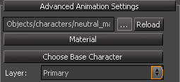

Обзор
Аддитивные анимации — это относительные анимации, что означает, что они не перезаписывают анимацию на совместных контроллерах, а вместо этого добавляют к ней.
Это означает, что аддитивная анимация сохранит базовую анимацию и стиль и, таким образом, отлично подходит для добавления поз и анимации, например, к верхней части тела. Он позволяет повторно использовать одну и ту же анимацию всего тела, но добавляет к ней множество вариаций. Использование добавки разной длины поверх цикла всего тела может разрушить монотонный вид. А поскольку базовые вращения не перезаписываются, добавка по-прежнему будет работать, когда персонаж, например, повернут в сторону верхней частью тела, поднял руки и т. д. Это может значительно уменьшить общее количество ресурсов и добавить много вариаций в анимацию.
Например, возможные варианты использования добавок: дыхание, осмотр, вздрагивание, изменение позы и многое другое. На данный момент добавки не могут изменять кости ниже бедер персонажа, чтобы предотвратить скольжение ног.
Аддитивы можно запускать как обычные анимации, поскольку движок автоматически распознает их как аддитивную/относительную анимацию после обработки компилятором ресурсов. График анимации предлагает модификатор, который позволяет нам запускать аддитивную анимацию наряду с обычными состояниями анимации, но с другими настройками наложения и т. д.
Главы:
Слои анимации
Анимации запускаются слоями:

Всего у нас доступно 16 слоев анимации.
Слой 0 является особенным, поскольку он считается базовым слоем. Слой 0 поддерживает пространства смешивания и извлечение движения.
Анимации смешиваются путем одновременного запуска их на разных слоях. Слои, не имеющие анимации, не оказывают никакого эффекта (например, анимацию можно иметь только на слоях 0 и 6).
Базовый слой обычно содержит анимацию всего тела (влияющую на большинство суставов и содержащую движение), тогда как более высокие слои обычно воспроизводят override или аддитивную анимацию части тела (влияющую только на подмножество суставов).
Создание добавок
Аддитивные анимации позволяют создавать анимации, которые можно добавлять в виде слоев поверх базовой анимации. Аддитивная анимация обычно представляет собой частичную анимацию тела, поэтому ее можно применять к базовой анимации всего тела, не мешая важным частям базовой анимации.
Чтобы создать аддитивную анимацию, вы начинаете с типичной базовой позы, а затем анимируете только те части, которые хотите включить в аддитивную анимацию.
- 1-й кадр анимации — базовая поза.
- это будет вычтено компилятором ресурсов при экспорте и нет быть частью финальной анимации
- Остальная часть анимации становится «дельтой» этой базовой позы.
- Анимируйте только те кости, которые необходимо анимировать.
- Кости, не отличающиеся от базовой позы (кадр 0), использоваться не будут.
Для пользователей 3ds Max, обязательно следуйте Создание аддитивной анимации подстраница учебника.
Экспорт добавок
Компилятор ресурсов обработает файл как добавку, если:
1. В настройках анимации .i_caf есть:
<AnimationSettings>
<AdditiveAnimation value="1"/>
</AnimationSettings>Тестирование добавок в Character Tool
Открыть тот Character Tool и загрузите sdk_player.cdf (если он не загружается по умолчанию).
Убедитесь, что ваши новые анимации отображаются в левой части Character Tool. Если вы тестируете аддитивную анимацию, не бойтесь каких-либо деформаций, которые вы увидите. Поскольку это аддитивная анимация, ее нельзя воспроизводить на основном слое.

Убедитесь, что для слоя установлено значение Первичный, Анимация включена, а все IK выключены.

Нажмите на relaxed_run_forward_fast анимацию на панели «Анимация» слева.
Теперь измените слой на Среднее .1:

Нажмите на аддитивную анимацию additive_walk_forward_fast_CF_01 на панели «Анимация» слева.
Обратите внимание, что аддитивная анимация фактически добавляется к существующей анимации бега. Персонаж съеживается во время бега.
Измените слой сейчас на Среднее .2 и нажмите на arms_coverFire_01 на панели «Анимация» слева.
Теперь вы можете увидеть, как получить новую анимацию приседания, используя добавки и анимацию верхней части тела. И конечный результат — это то, что вы уже просматривали в Максе.

Следите за деформацией сетки при создании аддитивной анимации.
На самом деле вы можете настроить вес аддитивной анимации. Если вы вернетесь к Layer Secondary .1, вы увидите Аддитивные веса анимации. 1 — значение по умолчанию.